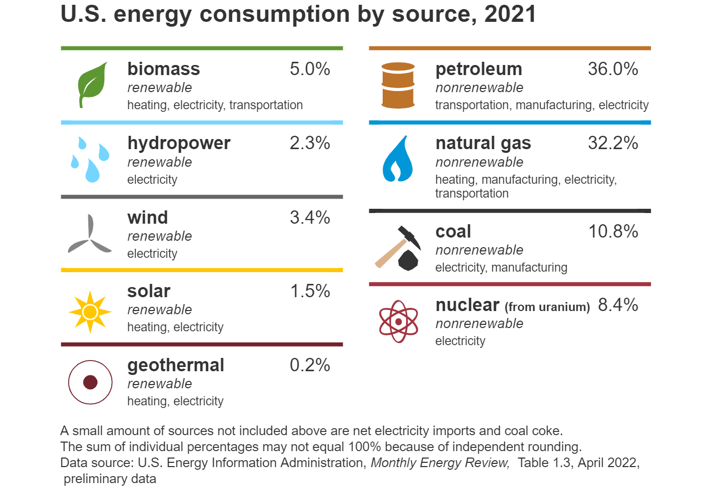

In the United States and many other countries, most energy sources for doing work are nonrenewable energy sources:
These energy sources are called nonrenewable because their supplies are limited to the amounts that we can mine or extract from the earth. Coal, natural gas, and petroleum formed over thousands of years from the buried remains of ancient sea plants and animals that lived millions of years ago. That is why we also call those energy sources fossil fuels.
Most of the petroleum products consumed in the United States are made from crude oil, but petroleum liquids can also be made from natural gas and coal.
Nuclear energy is produced from uranium, a nonrenewable energy source whose atoms are split (through a process called nuclear fission) to create heat and, eventually, electricity. Scientists think uranium was created billions of years ago when stars formed. Uranium is found throughout the earth’s crust, but most of it is too difficult or too expensive to mine and process into fuel for nuclear power plants.
The major types or sources of renewable energy are:
They are called renewable energy sources because they are naturally replenished. Day after day, the sun shines, plants grow, wind blows, and rivers flow.
Throughout most of human history, biomass from plants was the main energy source, which was burned for heat and to feed animals used for transportation and plowing. Nonrenewable sources began replacing most of renewable energy use in the United States in the early 1800s, and by the early-1900s, fossil fuels were the main sources of energy. Use of biomass for heating homes remained a source of energy but mainly in rural areas and for supplemental heat in urban areas. In the mid-1980s, use of biomass and other forms of renewable energy began increasing largely because of incentives for their use, especially for electricity generation. Many countries are working to increase renewable energy use as a way to help reduce and avoid carbon dioxide emissions.
The chart below shows U.S. energy sources, their major uses, and their percentage shares of total U.S. energy consumption in 2021.

A small amount of sources not included above are net electricity imports and coal coke. The sum of individual percentages may not equal 100% because of independent rounding. Data source: U.S. Energy Information Administration, Monthly Energy Review, Table 1.3, April 2022, preliminary dataGO BACK